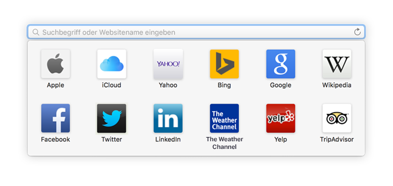
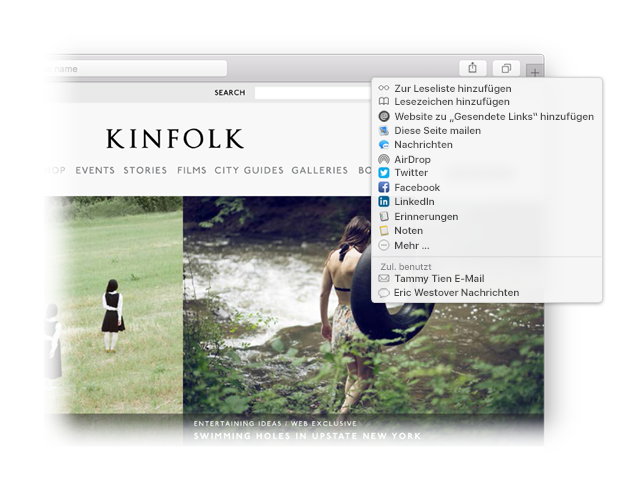

Finden Sie einen Favoriten.
Klicken Sie auf das intelligente Suchfeld, um auf Ihre bevorzugten Websites zuzugreifen. Klicken Sie auf eine Site, um dorthin zu gelangen.

Heften Sie eine Website an.
Bewegen Sie einen Tab nach links, um eine Website anzuheften. Sie wird dann dauerhaft in der Tableiste angezeigt.

Senden Sie einen Link.
Klicken Sie auf  , um einen Link in einer E-Mail oder einem Text zu senden, teilen Sie ihn auf Facebook oder Twitter oder fügen Sie ihn zu Ihren Notizen hinzu.
, um einen Link in einer E-Mail oder einem Text zu senden, teilen Sie ihn auf Facebook oder Twitter oder fügen Sie ihn zu Ihren Notizen hinzu.